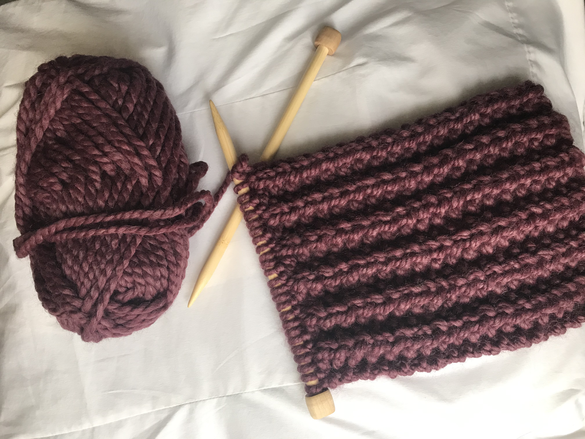
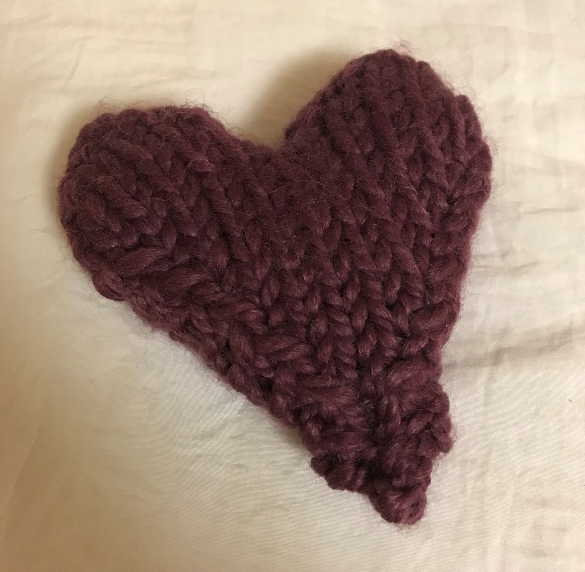

Ribbed Scarf by Karen, November 2020
I started this scarf back in November and I'm still working on it now. It's an easy ribbed knit pattern, meaning I alternate two knit stitches and two purl stitches throughout every row to get that desired ribbed effect. I think it'll take a while for me to reach the right scarf length, but I can't wait to wear it when I'm done.

Puffy Heart by Karen, October 2020
I recently bought some yarn and needles in hopes of getting back into the hobby of knitting. I found a tutorial on YouTube for this cute puffy heart. To make it, I followed the tutorial for both sides of the heart then started sewing the sides together with more yarn. Once it was mostly sewn, I stuffed it with yarn scraps to make it puffy then sewed up the rest. I think it turned out pretty good.
